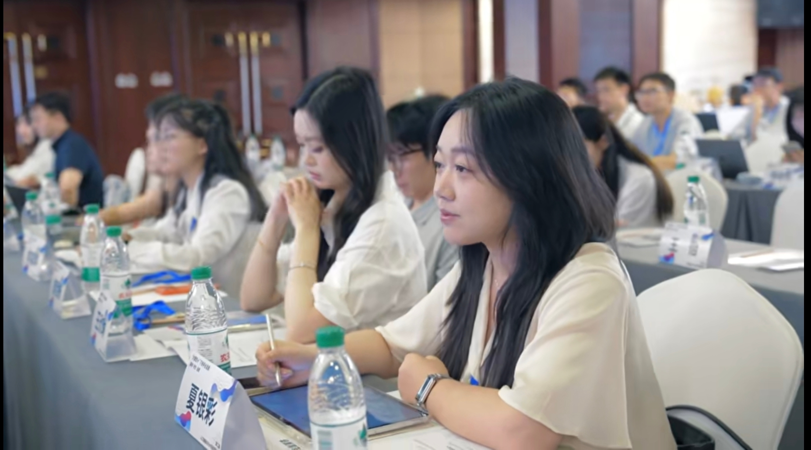

独立作者 · 2026.04 — 2026.06
顺从还是反抗？国内主流大语言模型的双重对齐研究
选取 DeepSeek-V3、Qwen3.6-plus、Ernie-4.5-Turbo 三个国内主流大模型，聚焦高价彩礼、数字复活、算法困境三大本土争议议题。构建"价值-话语"双维分析框架，设计五级梯度提示词，通过 API 接口批量获取语料数据，完成大模型对齐表现的实证考察。
研究成果在人工智能与平台经济论坛等4个高水平学术会议汇报，获第十届网络空间治理与传媒法治建设论坛暨"何微新闻奖"研究生论坛二等奖。